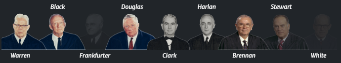
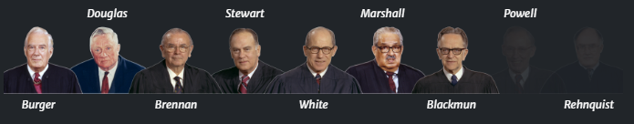

Is reading prayers or holding religious activities at school violate the Establishment Clause of the First Amendment.
Background
The New York State Board of Regents allowed schools to hold short
prayers as long as they were voluntary, and so these prayers would
be held every morning in several New York schools. The short prayer
they created was,
“Almighty God, we acknowledge our dependence upon Thee,
and we beg Thy blessings upon us, our parents, our teachers and our country. Amen.”
A group of families who had students from the Herricks Union Free School District came together to argue
against the prayer. They argued that its religious connotations aligned specifically with christianity,
and so it favored one religion over another, mostly due to the part of the prayer that states, “Almighty God”.
Steven I. Engel, a Jewish man who did not agree with the Board of Regents decision, led their attempt and sued
the school board president William J. Vitale. Engel gained the support of many Jewish organizations and others
who wanted to remove prayers from public schools.
 Children praying with the teacher in school from June, 1940
Children praying with the teacher in school from June, 1940
Justices
Earl Warren was known as a centrist, with support for a number of liberal views while being a Republican himself.
Unlike Warren's bipartisan approach his court is known to be one of the most liberal supreme courts. It's
because of the heavy liberalism in the Warren court that so many civil rights rulings created new acts to
protect people of color.
Decision
The court voted on a 6-1 decision in favor of Engel, and to prevent prayers from being recited at school.


 Hugo L. Black
Hugo L. Black
Justice Hugo L. Black wrote the majority opinion for this case, writing on the behalf of Warren, Douglas,
Clark, Harlan, and Brennan, stating that prayers cannot be held in public schools because the First Amendment
prevented the enactment of any law "respecting an establishment of religion," and that Vitale's prayers violated
the said establishment clause. Justice Black argued that the policy breached the separation between the church and
state. He even used trends in American history to prove his point, for example:
this very practice of establishing governmentally composed prayers for religious services was one of the reasons
which caused many of our early colonists to leave England and seek religious freedom in America.
Justice William O. Douglas gave a concurring opinion, stating that even though the students may not be forced to
perform the prayer, the teacher is, and the teacher is a public official who is on payroll from the government.
He believes that this infringes on our first amendment rights because the government is indirectly funding this
by paying the one reciting the prayer, in turn tying religion to our government. Justice Douglas quotes his own
dissenting opinion from a previous case on the first amendment.
if a religious leaven is to be worked into the affairs of our people, it is to be done by individuals
and groups, not by the Government.
 William O. Douglas
William O. Douglas
Justice Stewart's dissenting opinion states that letting children come together for a prayer in the morning does not
mean the creation of a state religion, and that in preventing them from doing so is to attack the “spiritual heritage” of
our nation. He then gives several examples in which references to God have been used by our government, while keeping
state affairs away from religious influence.
At the opening of each day's Session of this Court we stand, while one of our officials invokes the protection of
God . . . In 1954 Congress added a phrase to the Pledge of Allegiance to the Flag so that it now contains the words
'one Nation under God, indivisible, with liberty and justice for all.''. . . Since 1865 the words "IN GOD WE
TRUST" have been impressed on our coins.
 Potter Stewart
Potter Stewart
Clauses
This case existed mainly to decide on how to interpret the first Amendment and how far the government can go before it breaks the Establishment Clause.
Establishment Clause of the First Amendment:
Congress shall make no law respecting an establishment of religion, or prohibiting the free exercise thereof
Effects & Today
The case did not overturn any precedent cases but it did ensure that the government does not have the right to create and/or
enforce anyone to perform a prayer or any other religious motion. It also ensured that the government could not sponsor religious
programs, which is part of why teachers who are paid by the government in public schools cannot hold prayers.
The Engel v. Vitale ruling has held for decades, and has prevented schools from establishing prayers, but recently There has been
a US Supreme Court Case that may overturn this precedent. The Kennedy v. Bremerton School District case involved a football coach
who held a voluntary prayer for his players before games after school. The school district tried to stop him from doing so, fearing
a lawsuit, but Kennedy instead sued the school district for violating his First Amendment rights and Title VII of the Civil Rights
Act of 1964 which prohibits employment discrimination based on race, color, religion, sex, etc. This case resulted in a 6-3 vote in
favor of Kennedy, and allowed him to recite prayers with his players. The ruling suggests that teachers can hold prayers with their
students as long as it's after school, although the teacher is still paid by the government when the prayers are said, which
counteracts the ruling in Engel v. Vitale.